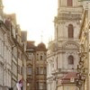

注册事件：
传统方式
方法监听注册方式
删除事件
事件流：从页面接受事件的顺序；事件发生时会在元素节点之间按照特定的顺序传播，这个传播过程即DOM事件流
- 捕获事件：从顶层寻找目标；html->body->p-button
- 当前目标事件;button
- 冒泡事件：从目标把事件传播回顶层;button->p->body->html
- 注意：JS代码只能执行捕获或冒泡阶段，传统方式只能获得捕获节点，事件监听可以获得任一阶段
事件委托：不是给每个自节点设置事件监听器，而是事件监听器设置在其父节点上，然后利用冒泡原理影响每个自节点
